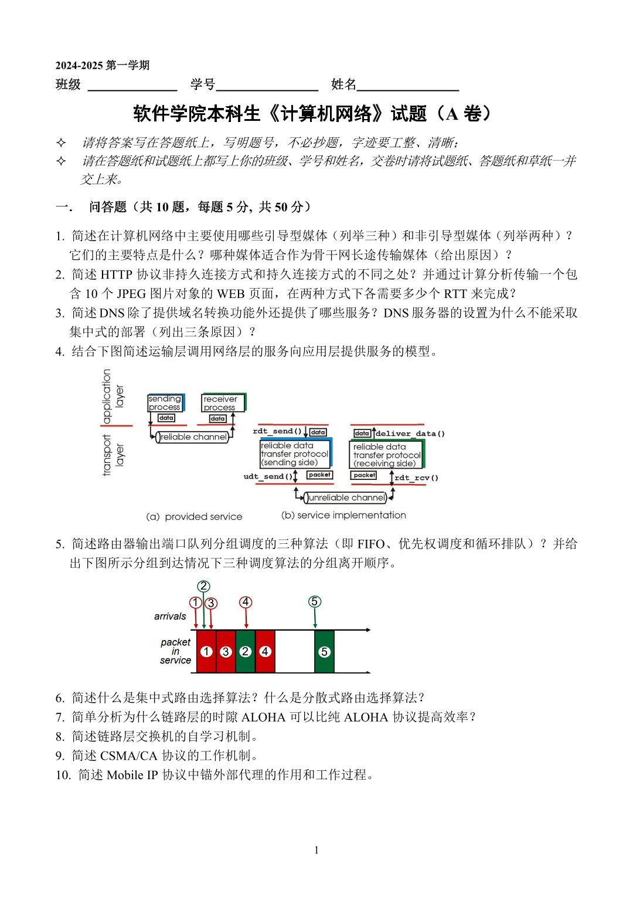
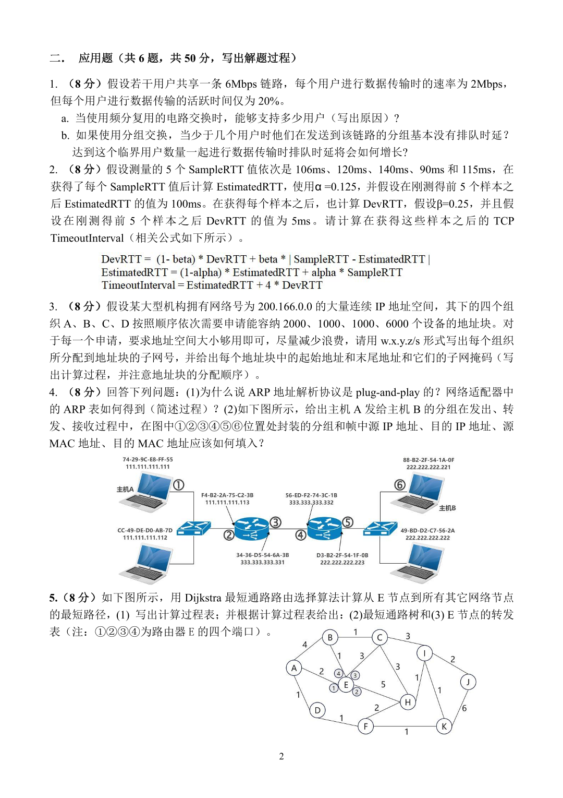

2025JLU计网A试题回忆
注意:本试卷为软件普班同学使用的试卷(计网A),卓班他们用的是计网C,计科同学考的是计网(计科没有ABC之分),其中卓班据说是考研题.
这三套试卷并行导致网上关于JLU计网期末的资料相当混杂,请您在阅读这篇文章之前先检查一下您是不是受众?
注意:这是回忆试卷,有的题记的不准
简答题(6分*8个)
三种上网的方式
DNS四个作用?本地DNS怎么工作的?DNS如何递归的?为什么根DNS不能递归?
两个传输层数据流协议
NAT是什么？结合下图讲讲NAT的工作过程?
?
?
?
简述AP…主动扫描和被动扫描…?
大题(8分*6个+4分*1个)
?
自定义了一个网络算时延
(4分)udp和tcp有三个字节的数据xxxxxxxx xxxxxxxx xxxxxxxx，现在要你校验一下,输出什么？为什么要用反码？错一个bit能查出来吗？错两个呢？
ip地址分配(子网划分典题)
?
有一个网络，各种问你ARP的实现，特别深，深到xx要不要给YY转发ARP请求,XX收到这个请求该怎么做云云
DMCA(错排)码，你要算两个正交的结果，你还要算加密的结果，全程画图(考研一般是给结果反推01,这个是给01你要输出结果,而且两个这样的01还要正交,很麻烦)
2024计网A试卷(图片版)


笔记
个人建议至少完整两天才不会挂科,否则非常极限.
听别人说写满就不会挂科,不知道真的假的.
计网大致知识看这个博客,但是软件计网A很难.
不知道这个有没有用
最短帧长
子网划分
网络位:ip地址前面的数字.
主机位:ip地址除了网络位后面的数字(他俩加起来位数必须是32)
网络前缀:/24这个加粗的数字就是网络前缀
这个格式的ip:(192.168.18.0/24):意思是前24位是固定的网络位,后面的随便划分网络位和主机位
子网掩码:地址位全1主机位全0的地址:(192.168.18.0/24)对应的子网掩码就是(255.255.255.0)
主机位不能全0,也不能全1(所以子网最小ip是 $0…01$ , 最大ip是 $1…10$ )
给定主机位:用 $2^n-2\ge x$ 找到一个最小的n作为主机位,剩下的全是网络位,子网就是剩下的所有状态.
给定子网数: $2^n\ge y$ 找到一个最小的n作为子网位,然后前面直接推即可,剩下的全是主机位.
给定好几个部门的主机:从大到小排序,大的先划分,还用主机数划分主机位,剩下的网络位全是0,后面的子网随着前面的至少一个变成1之后继续划分即可.
补充:默认网关地址:当前主机位1…10的地址.
默认广播地址:主机位全1的地址.
该网络的网络地址:主机位全0的地址
受限广播地址:255.255.255.255所有网络的受限广播地址都是这个.
本机网络地址:0.0.0.0所有本机网络地址都是0.0.0.0
地址空间:划分完网络位的所有可能主机位.
有效地址空间:除掉主机位全0全1的地址.
五类地址:ABCDE,前缀分别见下表.
1 | A 0 |
他们的地址位分别是8,16,24,32,32.
可用地址位:满足前缀的地址除掉地址位全0和全1剩下的所有地址(不考虑主机位)
所以判断什么地址靠前四位就能判断了.
CRC
题型1 计算余数
补0:取多项式最高位补几个0,如 $x^3$ 补三个0.
除法:多项式除法,注意是xor运算不是加减运算.
最后取补0的位数,把校验码和源码拼起来作为答案.
题型2 校验误码
直接进行多项式运算,能除尽就是没问题,否则有误码.
三次握手 四次分手
名词解释:
SYN:同步位,SYN=1表示进行连接请求
ACK:确认位,ACK=1确认有效,否则确认无效
ack:确认号(小写),对方发过来的确认号+1
seq:序号
首先我们画出标准的
TCP连接1
2
3
4
5
6
7
8
9SYN=1,seq=x(随机)
------------->(实际上是一条斜线)
SYN=1,ACK=1,ack=x+1,seq=y(随机)
<-------------
ACK=1,ack=y+1
------------->
(代表连接好了,可以传输数据了)
断开连接1
2
3
4
5
6
7
8
9
10
11
12FIN=1,seq=u
------------->(此时服务器端B是半关闭状态,还能传数据)
ACK=1,ack=u+1,seq=v
<-------------
(还有什么数据赶紧传)
<=====
FIN=1,ACK=1,ack=u+1,seq=w
<-------------
ACK=1,ack=w+1,seq=u+1
------------->
更新路由表
用路由表x更新路由表y
首先所有距离都+1,代表从被更新的路由走到更新路由的距离,然后from全部改成这个路由.
然后用这个新表更新路由:如果原先路由和这个路由一样,则无条件改成这个距离,无论距离变大还是变小.
如果原先不存在这条路,那就新加上.
如果原先的路更短且路由不一样,可以保持不变.
原先R6路由表
| 目的网络 | 距离 | 下一跳路由器 |
|---|---|---|
| Net2 | 3 | R4 |
| Net3 | 4 | R5 |
R4发来的更新表
| 目的网络 | 距离 | 下一跳路由器 |
|---|---|---|
| Net1 | 3 | R1 |
| Net2 | 4 | R2 |
| Net3 | 1 | 直接交付 |
答:修改后的R4信息:
| 目的网络 | 距离 | 下一跳路由器 |
|---|---|---|
| Net1 | 4 | R4 |
| Net2 | 5 | R4 |
| Net3 | 2 | R4 |
修改后的R6信息:
| 目的网络 | 距离 | 下一跳路由器 |
|---|---|---|
| Net1 | 4 | R4 |
| Net2 | 5 | R4 |
| Net3 | 2 | R4 |
超时重传
RTT:往返时间
RTO:超时重传时间
加权平均往返时间RTT
RFC建议标准: $\alpha=0.125$
(是当前的RTTS1,不是全局的RTTS)
RFC建议标准: $\alpha=0.25$
发生重传时不测量RTT,直接把RTO变成二倍然后重传数据
数据报分片 重传 偏移字段 MF值
一个数据报长度为 4000 字节（固定首部长度）。现在经过一个网络传送，但此网络能够传送的最大数据长度为 1500 字节。试问应当划分为几个短些的数据报片？各数据报片的数据字段长度、片偏移字段和 MF 标志应为何数值？
答: 数据报4000->数据大小3980字节(剪掉20字节报头)
一次能传送的数据:1500-20=1480字节
除掉最后一片外,其余报片要是8的倍数
所以拆成1480,1480,1020,列表:
| 数据长度 | 字段 | 片偏移 | MF | |
|---|---|---|---|---|
| 1 | 1500B | 1480B | 0 | 1 |
| 2 | 1500B | 1480B | 185 | 1 |
| 3 | 1040B | 1020B | 370 | 0 |
MF:后面还有没有数据,有就是1,没有就是0.
片偏移:一片是8B,偏移就是这个不算这个数据的前缀和/8的值
TCP报文段
eg:A向B发送两个报文段,序号是90和120.
(1)第一个报文段携带多少个字节的数据?
(2)主机B收到第一个报文段后发回的确认号应当是多少?
(3)如果B收到第二个报文段后发回的确认中的确认号为200,试问A发送的第二个报文段中的数据有多少个字节?
(4)如果A发送的第一个报文段丢失了,但第二个报文段到达了B.B在第二个报文段到达后向A发送确认.试问这确认号应该为多少?
只需要记住,序号是”这段报文起头的数据的序号”.
(1)所以第一段承载[90,119],也就是30字节.
(2)牢记”确认号是服务器想收到的报文段的编号”,所以正常发回应该是120.
(3)直接反推,80字节.
(4)丢失意味没收到,所以确认号应该是90.
信道利用率
其中 L_1是发送帧长,L_2是确认帧长,t是传播时长和传播速率.
等待协议:直接算:两倍单向时延+发送时延+确认帧时延(有可能和发送时延一样)
后退N帧协议:求出帧头序号长度n,2^n代表能同时传这么多帧,然后用上面算出来的时延直接除: $2^n/t$
选择重传协议: $2^{n-1}/t$
门限值
sstresh(慢开始门限值)
拥塞窗口(超时的极限值)
列表即知.
| 轮次 | 1 | 2 | 3 | 4 | 5 | 6 | 7 | 8 | 9 | 10 | 11 | 12 | 13 | 14 | 15 |
|---|---|---|---|---|---|---|---|---|---|---|---|---|---|---|---|
| 窗口大小 | 1 | 2 | 4 | 8 | 9 | 10 | 11 | 12 | 1 | 2 | 4 | 6 | 7 | 8 | 9 |
规律:首先以2^n增长,在第一次接触/超过门限的时候值为门限,同时门限/=2.
超过门限之后就按照1的速度增长,直到触及极限的时候归1,仍然从2^n增长,注意门限新变化,超过门限之后仍然1增长.
神秘pad
7E->7D 7E
7D->7D 5D
X<20 -> 7D X+20
01pad:碰到5个1直接pad0,解密也是直接删就行.
曼彻斯特编码
曼彻斯特编码:高跳低->1,低跳高0
差分曼彻斯特编码:图像和原来不变:0,图像和原来翻转了1.
计算
时延带宽积=时延x带宽
发送窗口:floor(带宽积/帧大小)
序号数:log2(2x发送窗口),有来有回的
复用
FDM 频分复用(无线电占用不同波长,注意无论这个波长忙不忙都不会分给别人)
TDM 时分复用(操作系统的时间片机制,一个周期内这三个都干)
STDM 统计时分复用(上面某个时间片内做完了TDM会闲着,STDM会分给别人)
WDM 波分复用(好多波长的光拧成一股信号传播,有光复用器和光分用器,还有放大器)
CDM 码分复用(大题)
1对方发送1
-1对方发送0
0对方未发送
CDMA:
就是,A(+1,-1,…)和好几个站点同时通信,最后他们运算得到码片(+2,-2,…),求A对这个通信得到的结果.
答案是直接求正交,最后得到一个值再除向量长度n得到是+1-1还是0.